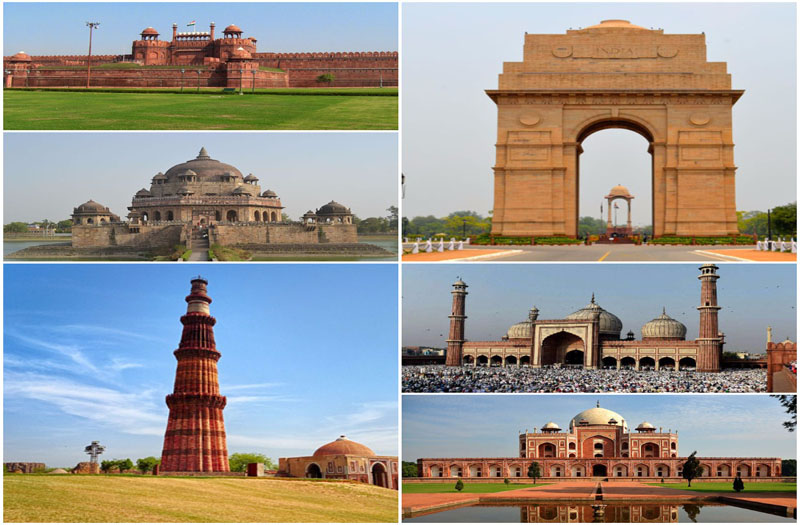
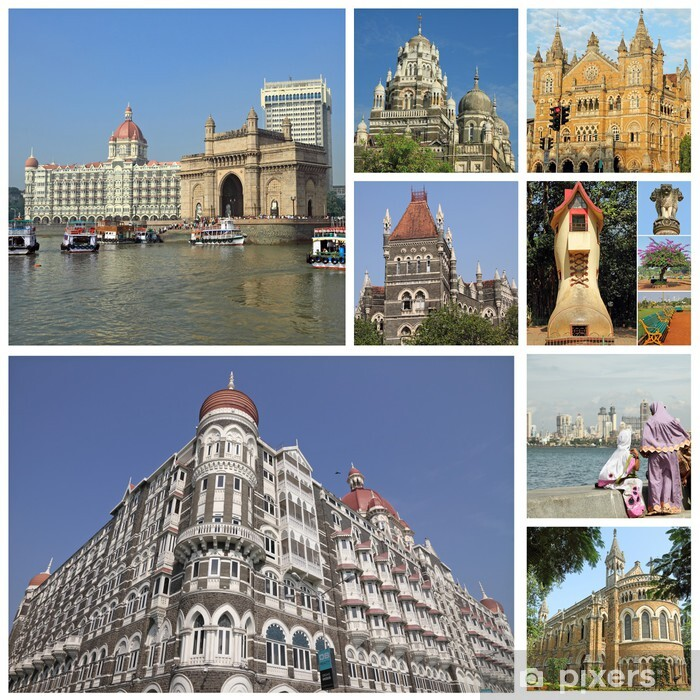
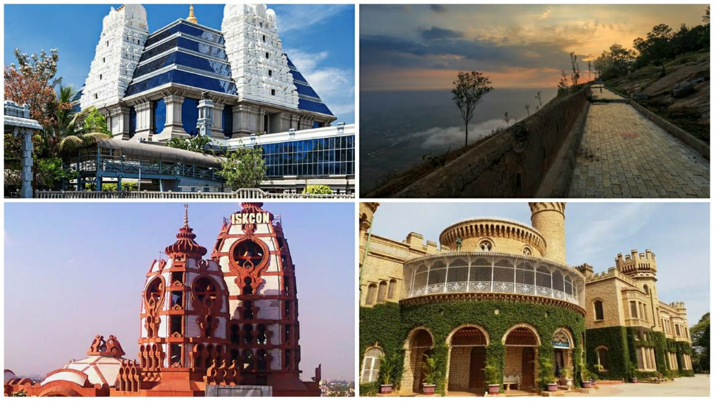
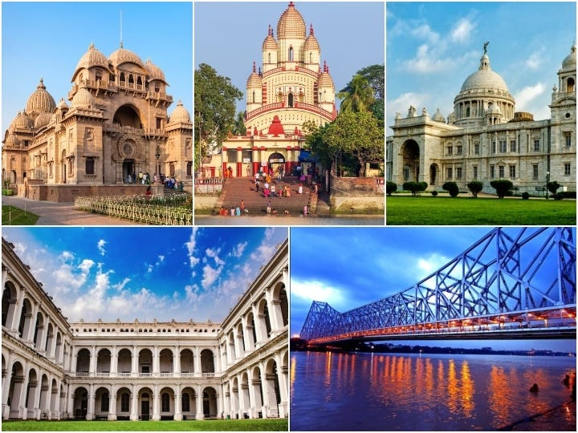

Delhi
- India Gate
- Red Fort
- Qutub Minar
- Lotus Temple
- Humayun's Tomb

Mumbai
- Gateway of India
- Marine Drive
- Elephanta Caves
- Chhatrapati Shivaji Terminus
- Juhu Beach

Jaipur
- Hawa Mahal
- Amber Fort
- City Palace
- Jantar Mantar
- Nahargarh Fort

Bengaluru
- Bangalore Palace
- Lalbagh Botanical Garden
- Vidhana Soudha
- Tipu Sultan's Summer Palace
- Cubbon Park

Kolkata
- Victoria Memorial
- Howrah Bridge
- Indian Museum
- Marble Palace
- Belur Math